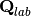
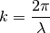
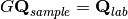
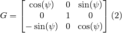
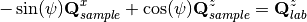
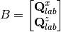
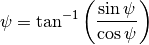

FindPeaksMD dialog.
Table of Contents
| Name | Direction | Type | Default | Description |
|---|---|---|---|---|
| InputWorkspace | Input | IMDWorkspace | Mandatory | An input MDEventWorkspace or MDHistoWorkspace with at least 3 dimensions. |
| PeakDistanceThreshold | Input | number | 0.1 | Threshold distance for rejecting peaks that are found to be too close from each other. This should be some multiple of the radius of a peak. Default: 0.1. |
| MaxPeaks | Input | number | 500 | Maximum number of peaks to find. Default: 500. |
| PeakFindingStrategy | Input | string | VolumeNormalization | Strategy for finding peaks in an MD workspace.1. VolumeNormalization: This is the default strategy. It will sort all boxes in the workspace by deacresing order of signal density (total weighted event sum divided by box volume). 2.NumberOfEventsNormalization: This option is only valid for MDEventWorkspaces. It will use the total weighted event sum dividedby the number of events. This can improve peak finding for histogram-basedraw data which has been converted to an EventWorkspace. The threshold forpeak finding can be controlled by the SingalThresholdFactor property which shouldbe larger than 1. Note that this approach does not work for event-based raw data. Allowed values: [‘VolumeNormalization’, ‘NumberOfEventsNormalization’] |
| DensityThresholdFactor | Input | number | 10 | The overall signal density of the workspace will be multiplied by this factor to get a threshold signal density below which boxes are NOT considered to be peaks. See the help. Default: 10.0 |
| SignalThresholdFactor | Input | number | 1.5 | The overal signal value (not density!) normalized by the number of events is compared to the specified signal threshold. Boxes which are below this threshold are NOT considered to be peaks.This property is enabled when the PeakFindingStrategy has been set to NumberOfEventsNormalization. The value of boxes which contain peaks will be above 1. See the below for more information. Default: 1.50 |
| CalculateGoniometerForCW | Input | boolean | False | This will calculate the goniometer rotation (around y-axis only) for a constant wavelength. This only works for Q sample workspaces. |
| Wavelength | Input | number | Optional | Wavelength to use when calculating goniometer angle. If notset will use the wavelength parameter on the instrument. |
| OutputWorkspace | Output | PeaksWorkspace | Mandatory | An output PeaksWorkspace with the peaks’ found positions. |
| AppendPeaks | Input | boolean | False | If checked, then append the peaks in the output workspace if it exists. If unchecked, the output workspace is replaced (Default). |
| EdgePixels | Input | number | 0 | Remove peaks that are at pixels this close to edge. |
This algorithm is used to find single-crystal peaks in a multi-dimensional workspace (MDEventWorkspace or MDHistoWorkspace). It looks for high signal density areas, and is based on an algorithm designed by Dennis Mikkelson for ISAW.
The algorithm proceeds in this way:
Each peak created is placed in the output PeaksWorkspace, which can be a new workspace or replace the old one.
This algorithm works on a MDHistoWorkspace resulting from the BinMD v1 algorithm also. It works in the same way, except that the center of each bin is used since the centroid is not accessible. It may give better results on Workspace2D‘s that were converted to MDWorkspaces.
For data which has originally been based on histogram-type data and that has been converted to event-based data it might be beneficial to select the NumberOfEventNormalization for the PeakFindingStrategy property instead of the VolumeNormalization which is the default. This will disable the DensityThresholdFactor property and enable the SignalThresholdFactor property. The algorithmic steps remain the same as above but instead of using the signal density as the sorting quantity the signal count (total weighted event sum divided by the number of events) is used. If the events are weighted this will result in boxes with signal counts larger than one for peaks and for the majority of background counts the signal count will be 1. Hence it is possible to discriminate between peaks and background. Note that the NumberOfEventNormalization selection of the PeakFindingStrategy property does not make sense for all scenarios and infact might not produce useful results for your particular case.
The CalculateGoniometerForCW option allows you to keep only one instrument definition from a set of merged MD workspaces. It only works for a constant wavelength source and only for Q sample workspaces. It also assumes the goniometer rotation is around the y-axis only.
The goniometer ( ) is calculated from
) is calculated from
 for a given wavelength (
for a given wavelength ( )
by:
)
by:
First calculate the  using
and .



where  is from 0 to
is from 0 to  and
and  is from
is from  to
to  . This means that it will assume your detector position is on the left of the beam even it it’s not.
. This means that it will assume your detector position is on the left of the beam even it it’s not.
Now you have , and k you can get using (1).
We need to now solve . For a rotation around y-axis only we want to find
 for:
for:

which gives two equations


make


Then we need to solve  for
for  where
where

then

Put into (2) and you have the goniometer for that peak.
Example - IntegratePeaks:
The code iteslef works but disabled from doc tests as takes too long to complete. User should provide its own event nexus file instead of TOPAZ_3132_event.nxs used within this example. The original TOPAZ_3132_event.nxs file is available in Mantid system tests repository.
1 2 3 4 5 6 7 8 9 10 11 12 13 14 15 16 17 18 19 20 21 22 23 24 25 26 27 28 29 30 31 32 33 34 | #.. testcode:: exFindPeaksMD
def print_tableWS(pTWS,nRows):
''' Method to print part of the table workspace '''
tab_names=pTWS.keys()
row = ""
for name in tab_names:
if len(name)>8:
name= name[:8]
row += "| {:8} ".format(name)
print(row + "|")
for i in range(nRows):
row = ""
for name in tab_names:
col = pTWS.column(name);
data2pr=col[i]
if type(data2pr) is float:
row += "| {:8.1f} ".format(data2pr)
else:
row += "| {:8} ".format(str(data2pr))
print(row + "|")
# load test workspace
Load(Filename=r'TOPAZ_3132_event.nxs',OutputWorkspace='TOPAZ_3132_event',LoadMonitors='1')
# build peak workspace necessary for IntegrateEllipsoids algorithm to work
ConvertToMD(InputWorkspace='TOPAZ_3132_event',QDimensions='Q3D',dEAnalysisMode='Elastic',Q3DFrames='Q_sample',LorentzCorrection='1',OutputWorkspace='TOPAZ_3132_md',\
MinValues='-25,-25,-25',MaxValues='25,25,25',SplitInto='2',SplitThreshold='50',MaxRecursionDepth='13',MinRecursionDepth='7')
peaks=FindPeaksMD(InputWorkspace='TOPAZ_3132_md',PeakDistanceThreshold='0.37680',MaxPeaks='50',DensityThresholdFactor='100',OutputWorkspace='TOPAZ_3132_peaks')
# print 10 rows of table workspace
print_tableWS(peaks,10)
|
Output:
1 2 3 4 5 6 7 8 9 10 11 12 13 | #.. testoutput:: exFindPeaksMD
| RunNumbe | DetID | h | k | l | Waveleng | Energy | TOF | DSpacing | Intens | SigInt | BinCount | BankName | Row | Col | QLab | QSample | PeakNumb |
| 3132 | 1124984 | 0.0 | 0.0 | 0.0 | 3.1 | 8.5 | 14482.3 | 2.0 | 0.0 | 0.0 | 1668.0 | bank17 | 120.0 | 42.0 | [1.57771,1.21779,2.37854] | [2.99396,0.815958,0.00317344] | 1 |
| 3132 | 1156753 | 0.0 | 0.0 | 0.0 | 2.1 | 18.8 | 9725.7 | 1.3 | 0.0 | 0.0 | 1060.0 | bank17 | 145.0 | 166.0 | [2.48964,1.45725,3.88666] | [4.52618,1.71025,0.129461] | 2 |
| 3132 | 1141777 | 0.0 | 0.0 | 0.0 | 1.7 | 28.1 | 7963.2 | 1.0 | 0.0 | 0.0 | 96.0 | bank17 | 17.0 | 108.0 | [2.60836,2.31423,4.86391] | [5.69122,1.79492,-0.452799] | 3 |
| 3132 | 1125241 | 0.0 | 0.0 | 0.0 | 1.6 | 33.9 | 7252.2 | 1.0 | 0.0 | 0.0 | 83.0 | bank17 | 121.0 | 43.0 | [3.15504,2.42573,4.75121] | [5.97829,1.63473,0.0118744] | 4 |
| 3132 | 1170598 | 0.0 | 0.0 | 0.0 | 1.5 | 34.1 | 7224.6 | 0.9 | 0.0 | 0.0 | 73.0 | bank17 | 166.0 | 220.0 | [3.43363,1.70178,5.39301] | [6.07726,2.59962,0.281759] | 5 |
| 3132 | 1214951 | 0.0 | 0.0 | 0.0 | 1.9 | 22.8 | 8839.5 | 1.7 | 0.0 | 0.0 | 719.0 | bank18 | 231.0 | 137.0 | [2.73683,1.43808,2.11574] | [3.5786,0.470838,1.00329] | 6 |
| 3132 | 1207827 | 0.0 | 0.0 | 0.0 | 1.7 | 27.9 | 7991.7 | 1.3 | 0.0 | 0.0 | 447.0 | bank18 | 19.0 | 110.0 | [2.80324,2.29519,3.09134] | [4.71517,0.554412,0.37714] | 7 |
| 3132 | 1232949 | 0.0 | 0.0 | 0.0 | 1.2 | 53.3 | 5782.1 | 0.9 | 0.0 | 0.0 | 45.0 | bank18 | 53.0 | 208.0 | [4.29033,2.63319,4.46168] | [6.52658,1.27985,1.00646] | 8 |
| 3132 | 1189484 | 0.0 | 0.0 | 0.0 | 1.1 | 63.4 | 5299.3 | 1.0 | 0.0 | 0.0 | 31.0 | bank18 | 108.0 | 38.0 | [4.02414,3.39659,3.83664] | [6.4679,0.298896,0.726133] | 9 |
| 3132 | 1218337 | 0.0 | 0.0 | 0.0 | 1.0 | 79.8 | 4724.1 | 0.8 | 0.0 | 0.0 | 15.0 | bank18 | 33.0 | 151.0 | [4.96622,3.61607,5.32554] | [7.99244,1.19363,0.892655] | 10 |
|
Categories: AlgorithmIndex | Optimization\PeakFinding | MDAlgorithms\Peaks
C++ source: FindPeaksMD.cpp (last modified: 2019-07-17)
C++ header: FindPeaksMD.h (last modified: 2018-10-05)